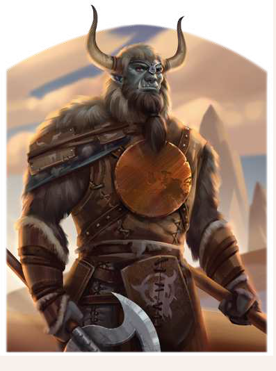

"Es geht mir nicht darum, die ganze Welt zu erobern. Es gilt, Brazoragh, dem Sonnenstier, eine Pforte in diese Welt zu brechen. Dann kommt unsere Herrschaft über die Welt von ganz allein. Denn wer soll sich uns schon entgegenstellen? Die Glatthäute nicht, denn die letzten Feinde aus diesem Volk werde ich bis dahin bezwungen haben. Ihre Schädel werden die Pfähle vor Khezzara zieren, allein Tairach zum Ruhm. Tairach, dessen Mond und Weisheit uns leiten."
Der Aikar Brazoragh ist der von den Orks lange ersehnte Auserwählte und gilt dank seines dunklen Charismas als Einiger aller Orkstämme. Eigentlich Ashim Riak Assai mit Namen, vollbrachte er, woran seine Vorgänger, allen voran Nargazz Blutfaust, gescheitert waren. Es gelang ihm nicht nur, die Orks zu einer Einheit zu formen, sondern auch allen Attentaten hartnäckig zu widerstehen und viele heilige Artefakte der Orks auf seinen Feldzügen zurückzuerobern. Bis heute ist er im Kampf unbezwungen und gilt als ebenso brutaler wie gerissener Gegner. Seine Pläne sind für einen Ork ausgesprochen weitreichend und haben sich bisher auch den weisesten Köpfen der Menschen nicht erschlossen. Große Sorge bereitet ihnen der Bau des gewaltigen Hornturms in Khezzara, den der Aikar mit unerbittlicher Härte vorantreibt.
Volkes Stimme
- "Er ist der Aikar Brazoragh, der Einiger der Stämme! Auch der Stärkste von uns hat ihn nicht wanken lassen. Er wird uns gegen die Glatthäute führen und wir werden siegen!"
- "Die Geißel des Nordens. Ins Reich eingefallen und entkommen.
Wie kann das sein? Ein Schwarzpelz, der Rondra trotzt? Nein, unser nächster Schwertzug muss Khezzara gelten, um diesen Aikar ein für alle Mal zu vernichten."